Profissionais autônomos
Quem atende em consultório ou em serviços comunitários e precisa achar uma ficha sem depender de planilhas espalhadas.
O Cadastro Clínico reúne busca de fichas, ruas e equipes, funcionamento da unidade e conferência de dados em um só lugar. Sem conta, sem nuvem e sem enviar cadastros para servidor.
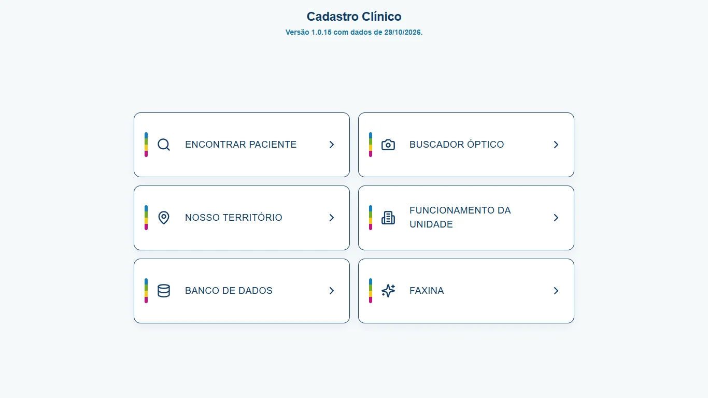
Captura real do aplicativo — dados fictícios.
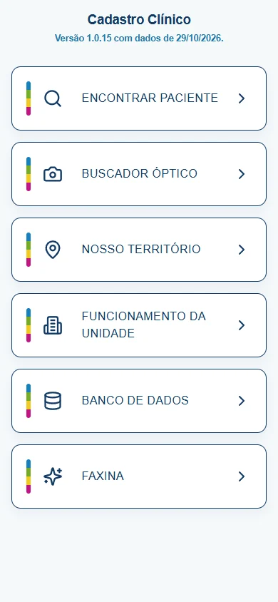
Captura real do aplicativo — dados fictícios.
O Cadastro Clínico organiza a base que você já produz em outro lugar. Ele não é a fonte original dos dados: é uma cópia de consulta, feita para o dia a dia da equipe, com busca instantânea e leitura simples.
Quem atende em consultório ou em serviços comunitários e precisa achar uma ficha sem depender de planilhas espalhadas.
Times que compartilham território, horários e setores e precisam da mesma resposta para orientar o atendimento.
Quem organiza importações, confere cadastros e mantém a base limpa para a equipe consultar.
A importação substitui o banco local pelo conjunto selecionado. O app é um espelho: mantenha sempre uma cópia da fonte oficial e dos arquivos que você importa.
Se uma leitura falhar ou a chave local se perder, o banco pode ser zerado — por isso o fluxo foi desenhado para reimportar da fonte, não para ser a única cópia.
Não há sincronização automática entre aparelhos. Cada instalação tem o seu próprio banco local.
Capturas reais do aplicativo, feitas com dados fictícios. Nenhum nome, documento, telefone ou endereço de paciente real foi usado.
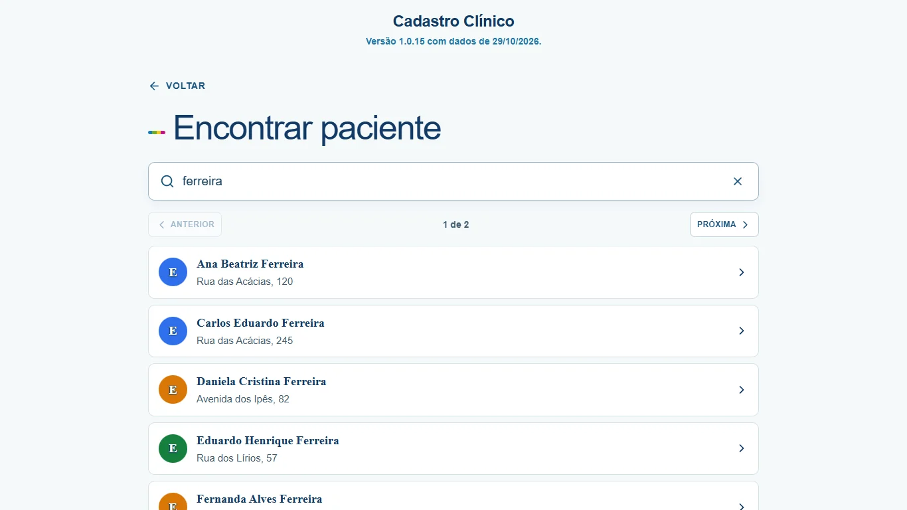
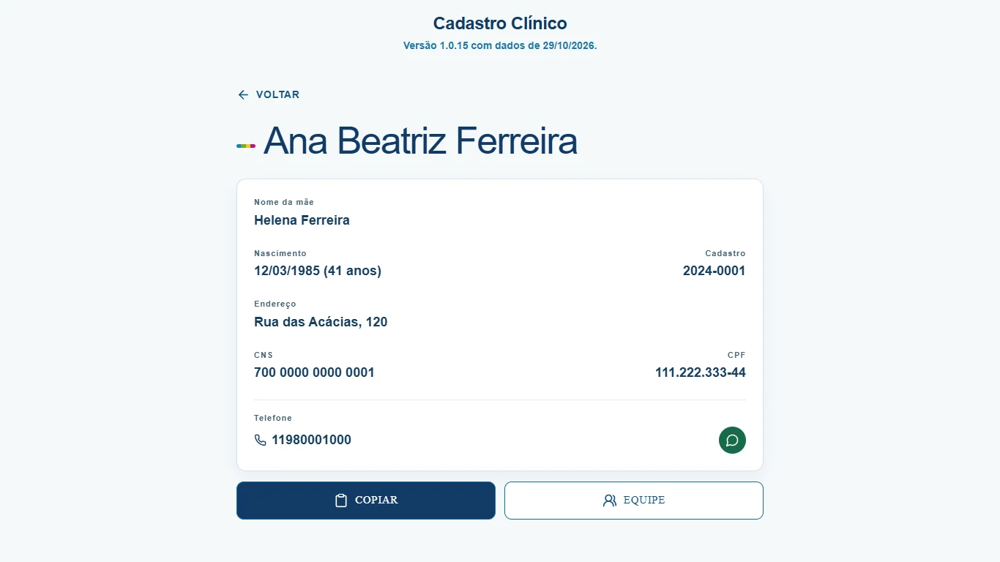
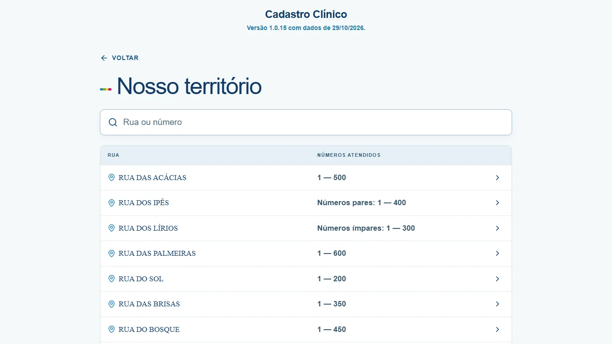
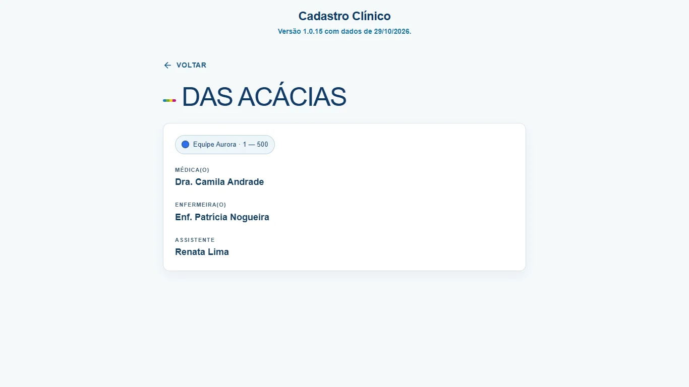
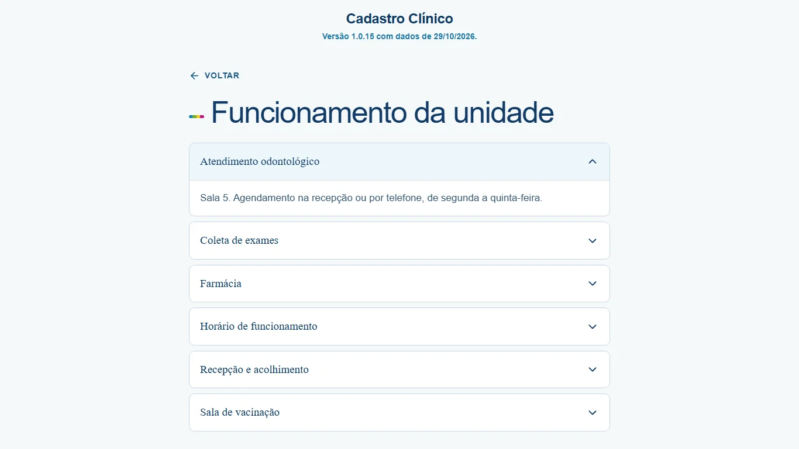
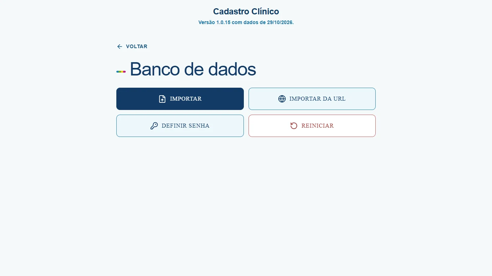
Tela inicial
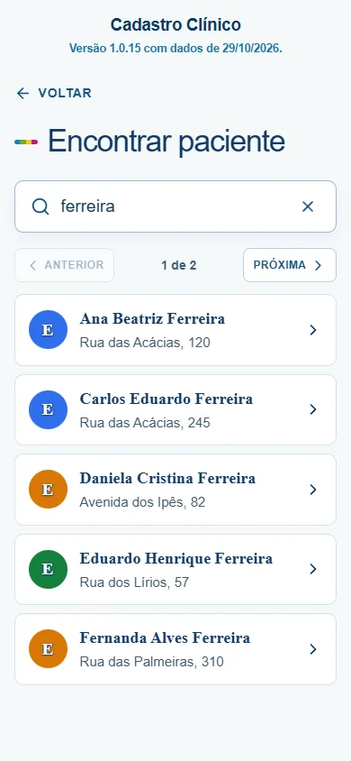
Busca e paginação
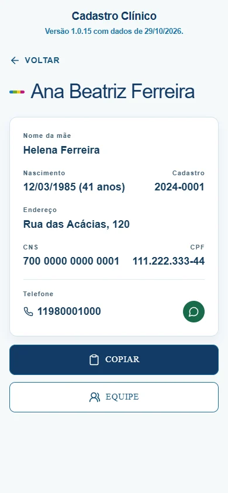
Ficha e contato
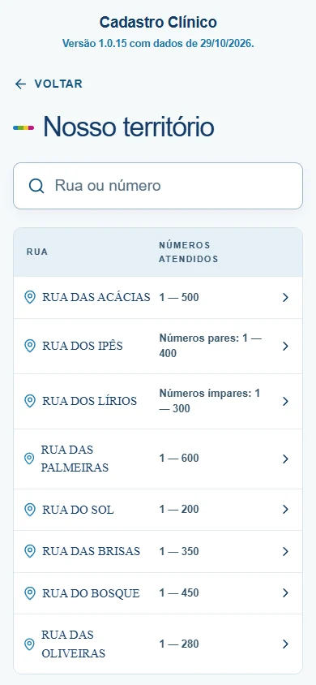
Território por rua
O app compara o endereço da ficha com as faixas cadastradas no território. A regra mais específica que contém o número vence. É apoio à organização — não prescrição, diagnóstico ou decisão clínica.
Exemplo: “Rua das Acácias, 120”.
entrada Rua das Acácias, 120 1. normalizar → "das acacias" + 120 2. filtrar → faixas com "das acacias" 3. aplicar → faixa 1–500 · todos os números 4. desempatar → regra mais específica saída Equipe Aurora · 1–500
A Faxina usa o mesmo princípio de conferência: valida dígitos de CPF e CNS, procura duplicidades, nomes parecidos e inversões. Ela apenas aponta para revisão — nada é alterado no banco.
O Cadastro Clínico é uma ferramenta privada e independente de organização. Ele não substitui sistemas oficiais, registros legais obrigatórios ou a análise de um profissional habilitado.
O app foi feito para funcionar primeiro no próprio dispositivo. A versão web é útil para consulta rápida, mas cada navegador tem o seu próprio armazenamento local.
Se você perder o aparelho, trocar de celular ou limpar os dados do navegador sem ter exportado um JSON, o banco local pode não ser recuperável. O app foi desenhado como espelho de trabalho: a fonte oficial continua sendo o sistema de origem.
A senha opcional de 4 caracteres serve para evitar abertura casual por outra pessoa. Ela não substitui o bloqueio de tela do aparelho, a criptografia do sistema operacional nem o sigilo profissional.
Antes de usar dados de pacientes, garanta base legal, autorização e salvaguardas adequadas à sua instituição. O app não decide isso por você.
Os três documentos são públicos, sem login, e valem para as versões Android, Windows e web.
Não. Não há conta, servidor, nuvem, analytics ou anúncios. Os cadastros ficam no armazenamento local do aparelho. A única conexão opcional é o “Importar da URL”, que baixa o arquivo que você indicar — sem enviar fichas —, e o link de WhatsApp, que abre o aplicativo externo.
Não para abrir, buscar, editar, consultar território ou usar a Faxina. Internet é necessária apenas para o “Importar da URL” e para abrir links de WhatsApp. A versão web precisa de conexão na primeira carga; depois pode funcionar offline conforme o navegador.
No armazenamento local (IndexedDB do app ou do navegador), cifrados com AES-GCM. O backup é manual: exporte o JSON pela tela administrativa ou pelo fluxo de exportação e guarde o arquivo em local seguro. Não existe backup automático em nuvem.
O banco local pode ser perdido. Como o app é um espelho de trabalho, a recuperação depende da fonte oficial ou de uma exportação JSON que você tenha guardado. Trate o JSON exportado como cópia sensível.
Não. É uma ferramenta independente de organização e consulta. Não substitui prontuário, sistema institucional, registro legal obrigatório, auditoria oficial ou a decisão de um profissional habilitado.
Na tela Banco de dados, escolha os arquivos CSV, TSV, TXT, RAR ou ZIP. A importação substitui o banco local pelo conjunto selecionado. Também existe a opção “Importar da URL”, que baixa um arquivo .rar, .zip ou .csv de um link HTTPS indicado por você.
Ela é uma barreira de discrição contra abertura casual. A proteção principal é a criptografia do aparelho e o bloqueio de tela do sistema. Não use a mesma senha de outros serviços e não compartilhe o dispositivo com quem não deve ver os dados.
Sim. A versão atual é distribuída gratuitamente, sem anúncios, assinatura ou compra dentro do app. Se uma versão licenciada vier a ser oferecida, prazo, preço e condições serão informados antes da contratação, sem bloquear retroativamente o uso já iniciado.
Não. É um projeto privado e independente, sem vínculo com governo, prefeitura, estado, união, SUS, ministério, autarquia, conselho profissional ou qualquer órgão público. Não usa brasões ou selos oficiais.
E-mail: mmr05@hotmail.com
Telefone / WhatsApp: (11) 97883-1938
Cadastro Clínico is an offline-first organizer for patient records, street-based territory and unit routines. Data stays encrypted on the device; there is no account, cloud sync, advertising or analytics. The optional URL import only downloads a file the user chooses, and WhatsApp links open the external app. It is an independent tool — not an official government system, medical record or medical device — and it does not replace the judgement of a qualified professional.